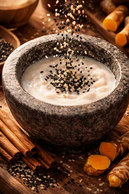
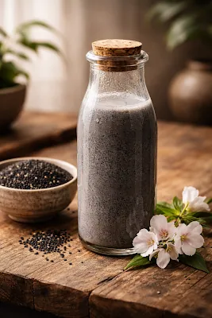

L’Élixir de Lait d'Or Noir : Le Secret de Minéralisation au Sésame
Par Chest0 · 2 mars 2026
Introduction
Dans le tumulte de nos vies modernes, nous cherchons souvent la force dans des stimulants artificiels ou des poudres de perlimpinpin venues du bout du monde. Pourtant, l'une des sources de vitalité les plus denses et les plus anciennes de l'humanité repose dans une minuscule graine : le sésame.
Considéré dans l'Ayurveda comme un symbole d'immortalité, le sésame n'est pas qu'un simple ornement sur un pain de boulangerie. C'est un concentré de soleil, une structure géométrique parfaite qui renferme en son sein les fondations mêmes de notre charpente osseuse et de notre sérénité nerveuse. Réaliser un élixir à base de sésame, c'est choisir de boire la terre et de renforcer ses racines.
Problème
Pourquoi nous sentons-nous si souvent "vides" ou "fragiles" ?
Le problème majeur de notre époque est la déminéralisation. Nos sols sont épuisés, notre eau est filtrée de ses nutriments essentiels, et notre stress quotidien agit comme une pompe qui aspire nos réserves de magnésium et de calcium.
Lorsque le corps manque de minéraux, il commence à "piller" ses propres réserves :
Les os et les dents s'affaiblissent (ostéopénie, caries).
Les cheveux tombent et perdent leur éclat.
Le système nerveux devient irritable (le magnésium manque pour calmer l'influx).
La fatigue devient structurelle : ce n'est plus un manque de sommeil, c'est un manque de carburant cellulaire.
Le sésame intervient là où les régimes modernes échouent : il apporte une densité nutritionnelle que peu d'aliments peuvent égaler.
Promesse
En intégrant cet élixir de sésame (que nous allons coupler à des ingrédients synergiques) dans ta routine, je te promets une reconnexion profonde avec ta structure.
Cet article va t'enseigner comment transformer une simple graine en un lait médicinal capable de :
Saturer tes cellules de minéraux bio-disponibles.
Lubrifier tes articulations et tes tissus internes.
Apaiser ton mental par la richesse en tryptophane.
Ce n'est pas juste une boisson, c'est un baume interne.
Bénéfice
L'alchimie du sésame offre des résultats tangibles qui se manifestent sur plusieurs plans :
Beauté structurelle : Des ongles plus durs, des cheveux plus épais et une peau mieux hydratée de l'intérieur (grâce aux bons acides gras).
Solidité osseuse : Un apport en calcium végétal bien mieux assimilé que celui des produits laitiers industriels.
Sérénité émotionnelle : Le sésame est un précurseur de la sérotonine, l'hormone du bien-être.
Transit et Élimination : Les fibres et les huiles douces du sésame aident à "nettoyer" le colon sans l'irriter.

Pourquoi ce remède est efficace
L'efficacité de cet élixir ne relève pas de la magie, mais d'une alchimie nutritionnelle précise.
Le sésame est riche en sésamine et sésamoline, deux lignanes uniques qui protègent le foie contre les dommages oxydatifs. Mais ce qui rend cet élixir particulièrement puissant, c'est sa concentration en :
Calcium et Phosphore : Le ratio idéal pour la fixation osseuse.
Zinc : Indispensable pour l'immunité et la synthèse du collagène.
Vitamine E : Un antioxydant majeur qui empêche les graisses de l'élixir de rancir dans ton corps, protégeant ainsi tes membranes cellulaires.
En broyant la graine et en l'activant par le trempage, nous rendons ces nutriments "vivants" et prêts à être absorbés par tes villosités intestinales.
Les bienfaits
Voici le détail de ce que cet élixir va accomplir dans ton temple (ton corps) :
Régénération du Système Nerveux : La teneur élevée en lécithine soutient les fonctions cérébrales et la mémoire.
Équilibre Hormonal : Les phytostérols du sésame aident à réguler les cycles et à apaiser les symptômes de la ménopause.
Anti-inflammatoire Naturel : Grâce au cuivre, cet élixir aide à réduire les douleurs liées à l'arthrite et aux inflammations articulaires.
Protection Cardiovasculaire : Il aide à équilibrer le profil lipidique (cholestérol).
La recette : L'Élixir de Sésame "Or Noir"
Pour obtenir une alchimie optimum, nous n'allons pas utiliser n'importe quel sésame. Nous allons privilégier le sésame noir (plus riche en antioxydants) ou le sésame complet.
Ingrédients :
1 tasse de graines de sésame noir (bio et crues) : La base minérale.
4 tasses d'eau filtrée ou osmosée : Le solvant de vie.
2 dattes Medjool : Pour le lien énergétique et le potassium.
1 pincée de sel marin gris : Pour activer les électrolytes.
1 cuillère à café de curcuma long en poudre + une pincée de poivre noir : Pour l'effet anti-inflammatoire systémique.
1 demi-gousse de vanille : Pour l'apaisement sensoriel.
Protocole de préparation :
L'Éveil (Trempage) : Fais tremper tes graines de sésame pendant au moins 8 heures (une nuit). Cela élimine l'acide phytique qui empêche l'absorption des minéraux.
Le Rinçage : Rince abondamment les graines jusqu'à ce que l'eau soit claire.
L'Union : Place les graines dans un mixeur haute puissance avec l'eau, les dattes dénoyautées, le curcuma, le poivre, le sel et la vanille.
La Transformation : Mixe pendant 1 à 2 minutes jusqu'à obtenir un lait parfaitement lisse.
La Filtration (Optionnelle) : Si tu souhaites un lait très fin, passe-le dans un sac à lait végétal. Garde la pulpe (l'okara) pour tes pâtisseries ou tes soins de peau !

Comment l’utiliser
Cet élixir se déguste de préférence tiède, mais pas bouillant (pour ne pas dénaturer les enzymes).
En rituel du matin : Une tasse à jeun pour réveiller le système digestif et minéraliser le corps dès l'aube.
En boisson du soir : Grâce au magnésium et au tryptophane, il prépare un sommeil profond et réparateur.
Cure de 21 jours : Pour un effet de reminéralisation profonde, bois un verre par jour pendant trois semaines lors des changements de saison.
À qui s’adresse ce rituel
Aux "épuisés" : Ceux qui sentent que leurs batteries ne se rechargent plus.
Aux sportifs : Pour la récupération musculaire et la protection des tendons.
Aux femmes : Pour soutenir la densité osseuse et l'équilibre hormonal à tout âge.
Aux étudiants : Pour la concentration et la gestion du stress des examens.
À toute personne souhaitant s'éloigner des produits laitiers industriels inflammatoires.
Précautions
Allergies : Le sésame est un allergène majeur. Assure-toi de ne pas y être sensible avant de commencer.
Calculs rénaux : En raison de la présence d'oxalates (bien que diminués par le trempage), les personnes sujettes aux calculs rénaux doivent consommer cet élixir avec modération.
Qualité : Utilisez impérativement des graines biologiques. Les graines de sésame non bio sont souvent traitées chimiquement après récolte.
Conclusion & appel à l’action
L’élixir au sésame n’est pas une solution miracle immédiate.
C’est un rituel de reconnexion, une manière d’envoyer un message clair à ton corps : je te soutiens, je t’écoute, je te respecte. En choisissant la densité nutritionnelle du sésame, tu choisis de rebâtir ton temple sur des fondations solides.
👉 Pour rappel, si la nature ne l’a pas créé, ne le buvez pas.
Si tu souhaites aller plus loin dans cette approche naturelle du bien-être, je partage régulièrement :
des élixirs ciblés,
des rituels santé simples,
des guides pratiques pour renforcer le corps et apaiser le mental.
📚 Je suis auteur bien-être sous le pseudo Chest0 JM.S, et mes ouvrages sont disponibles sur Amazon.